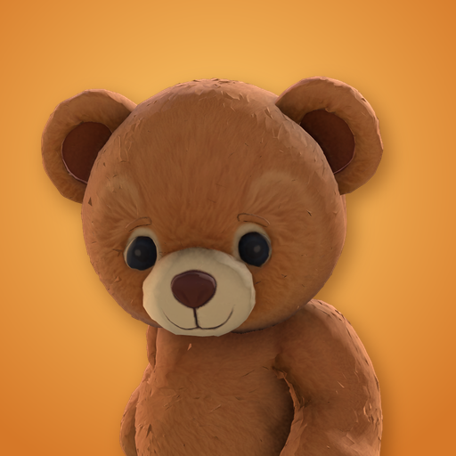
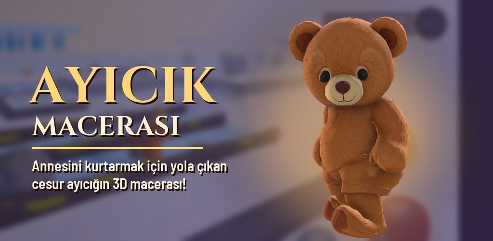
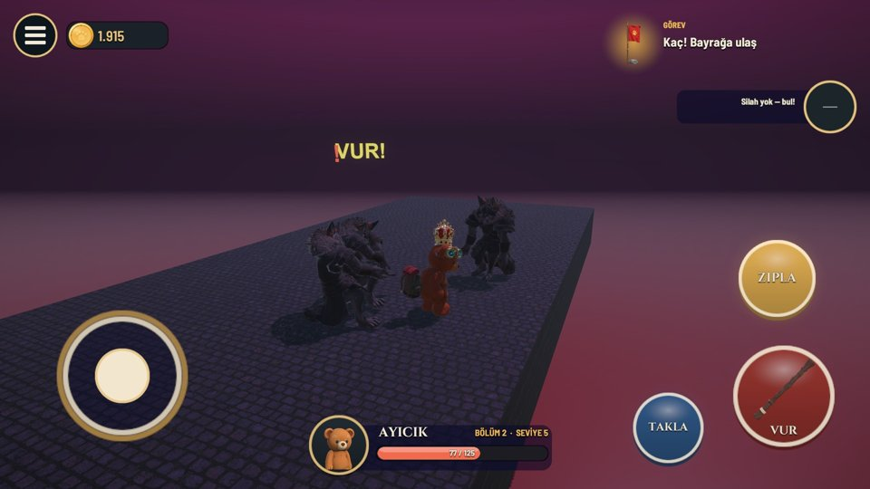
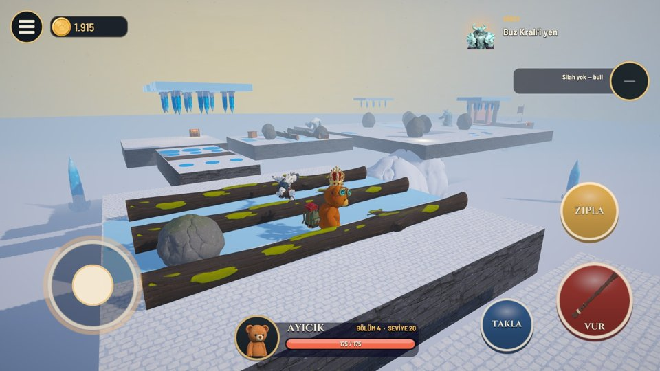

Ayıcık Macerası
KajuGame

Bir sonbahar gecesi, Bal Vadisi'nde yaşayan küçük Ayıcık uyandığında annesini yerinde bulamadı. Karanlık Orman'ın yaratıkları, Gölge Kral'ın emriyle annesini kaçırmıştı. Ayıcık küçük ama kararlı: kaçarak, saklanarak ve yol boyunca bulduklarıyla güçlenerek annesini geri getirecek!
Google Play'deOyunda neler var?
- 4 bölüm, 80 seviye ve her bölümün sonunda farklı bir canavar
- Sopa, meşale, taş balyoz ve buz mızrağı
- Kostümler, kürk renkleri ve silah geliştirmeleri
- Seslendirilmiş diyaloglar ve ilerleyen bir hikâye
- Google Play Games ile bulut kayıt

